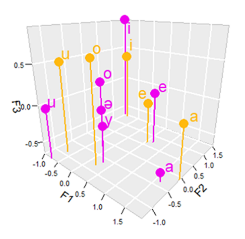
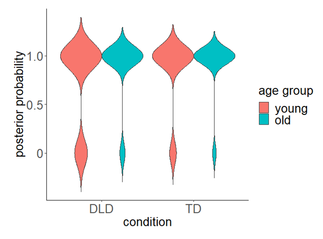
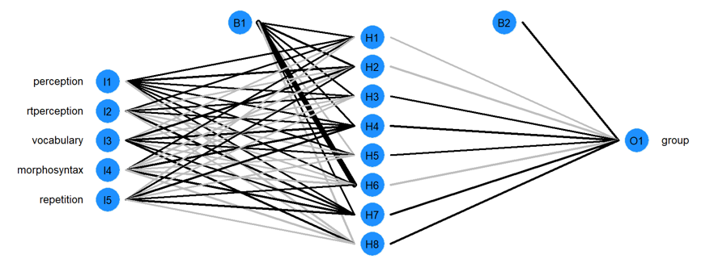

Research areas
|
Speech and language acquisition by nonnative speakers

|
I examine how second language listeners or learners perceive and produce speech sounds, as well as other language structures (e.g., morphology, syntax). I developed the Universal Perceptual Model (UPM), which predicts the acquisition of speech sounds through computational methods based on perceptual and acoustic similarity.
I also examine the effects of cognitive factors, such as nonverbal intelligence, phonological short-term memory, and attention control, on speech acquisition. |
|
Speech and language in individuals with communication disorders

|
I investigate the speech and language of individuals with communication-affecting conditions, including developmental language disorder, autism spectrum disorders, and others. The goal is to identify biomarkers for these conditions, which will allow for the development of prognostic and diagnostic tools. |
|
Machine learning and artificial intelligence

|
I use machine learning algorithms to automate the classification of speakers based on speech and language features and the identification of individuals with language disorders.
I also examine the language of artificial intelligence, with an emphasis on how it is distinguished from human language, algorithmic biases, and the development of legal frameworks in educational and clinical settings. |